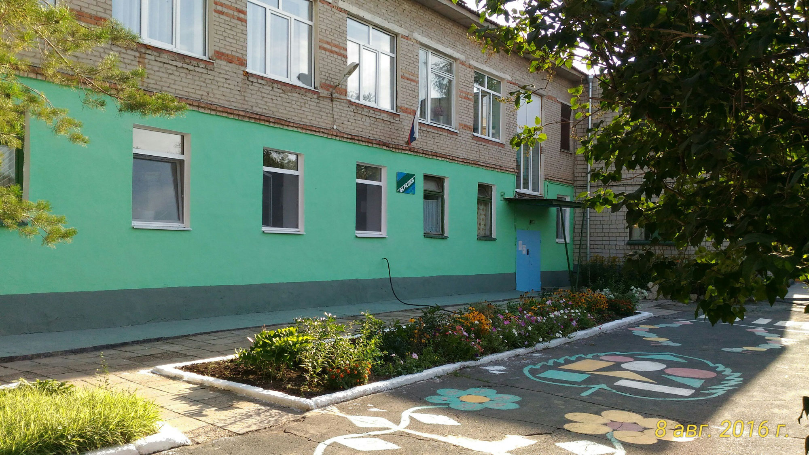

Муниципальное дошкольное образовательное автономное учреждение
«Детский сад № 29 «Берёзка» общеразвивающего вида с приоритетным
осуществлением художественно - эстетического развития воспитанников
г. Новотроицка Оренбургской области»

Мы рады встрече с вами!
Сайт нашего дошкольного учреждения адресован тем родителям и педагогам, кто неравнодушен к Детству своего сына или дочери. Дошкольный период жизни настолько важен для ребенка, что он во многом определяет всю его дальнейшую жизнь. Здесь Вы найдете:
- полную информацию о деятельности дошкольного учреждения;
- полезную информацию, которая поможет Вам в решении широкого круга воспитательных проблем;
- опыт работы наших педагогов с детьми и родителями;
- Вы можете задать свои вопросы руководству детского сада и получить на него исчерпывающий ответ.
С уважением, заведующий МДОАУ "Детский сад № 29"
Галина Викторовна Бережок
Правая часть